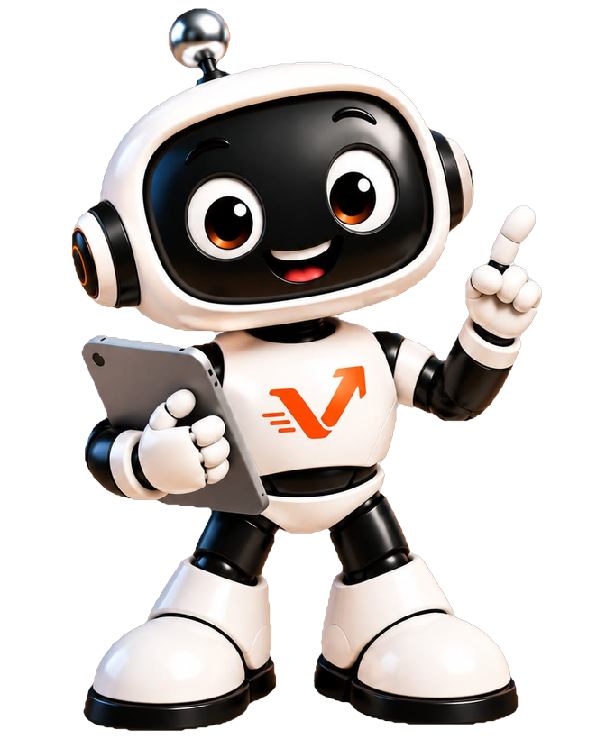

HÄUFIGE FRAGEN
Kurz gefragt. Klar beantwortet.
Was Betriebe uns am häufigsten fragen: zu Kosten und Offerte, Lernformaten, Daten, Vorwissen und dem ersten Schritt. Steht Ihre Frage nicht dabei, schreiben Sie uns.

ALLE FRAGEN
Alles an einem Ort.
Die Fragen von allen Seiten, nach Bereich geordnet. Auf den Seiten selbst stehen sie weiterhin dort, wo sie hingehören. Hier finden Sie sie beisammen.
Allgemein
Was macht vaiacon?
vaiacon führt Schweizer KMU an KI heran, in drei Bereichen: KI-Kompetenz (Ihr Team lernt, KI sicher einzusetzen), Sichtbarkeit (Sie werden bei Google gefunden und von KI-Assistenten richtig genannt) und Automationen (wiederkehrende Büroarbeit läuft von selbst). Auf Wunsch begleiten wir das Ganze laufend.
Für wen ist vaiacon gedacht?
Am meisten bewirken wir in Betrieben mit 5 bis 30 Mitarbeitenden und eigenem Büro, etwa im Handwerk, in Treuhandbüros, Praxen und Verwaltungen. Dort fällt genug Büroarbeit an, damit sich eine Automation oder eine Schulung rechnet.
Ist vaiacon eine klassische KI-Agentur?
Nein. KI ist für uns ein Werkzeug. Im Zentrum stehen verständliche Einführung, konkrete Abläufe und eine Umsetzung, die im Alltag funktioniert.
Brauche ich technisches Vorwissen?
Nein. Die Inhalte und die Umsetzung werden so erklärt, dass Unternehmer und Mitarbeitende ohne technisches Vorwissen mitkommen.
Wie beginnt eine Zusammenarbeit?
Am Anfang steht ein unverbindliches Gespräch am Telefon oder am Bildschirm. Oder Sie stellen sich im Offerten-Tool selbst eine Richtofferte zusammen. Danach klären wir, ob KI-Kompetenz, Sichtbarkeit, Automationen, Begleitung oder eine Kombination davon sinnvoll ist.
Was kostet es, und wie komme ich zu einer Offerte?
Die Preise stehen offen auf den Seiten der drei Bereiche. Im Offerten-Tool kreuzen Sie an, was Sie interessiert, beschreiben Ihre Wünsche und erhalten die Offerte sofort auf dem Bildschirm und per Mail. Das ist unverbindlich und braucht rund zwei Minuten. Die Preise im Katalog gelten 30 Tage. Offerte zusammenstellen →
Sind die Preise inklusive Mehrwertsteuer?
Ja. Alle Preise sind in Schweizer Franken angegeben und enthalten die Mehrwertsteuer von 8,1 %.
Was ist die KI-Standortbestimmung?
Ein kostenloser Selbsttest für Führungskräfte: zwölf kurze Fragen, ein ehrliches Ergebnis und eine persönliche Einschätzung, was sich als Nächstes lohnt. Sie finden ihn bei KI-Kompetenz. Nicht zu verwechseln mit der KI-Standortanalyse im Betrieb (CHF 2'150): Dort schauen wir uns Ihren Betrieb an und legen Ihnen einen Bericht mit den besten nächsten Schritten vor.
Was sind die KI-KMU-News?
Unsere Übersicht zu dem, was in der KI für Schweizer KMU gerade zählt, kurz und ohne Fachchinesisch. Die laufende Woche steht auf der Seite KI-KMU-News, frühere Ausgaben liegen im Archiv, und wer möchte, abonniert sie als Feed.
Was passiert mit unseren Daten?
Wir arbeiten nach dem revDSG. Vor der Umsetzung klären wir mit Ihnen, welche Daten ein Werkzeug überhaupt sehen darf, und halten Kundendaten dort heraus, wo sie nicht hingehören.
Gibt es Referenzen?
Ja. Auf der Seite Aus der Praxis erzählt eine Kundin, wie ihr Beauty Studio heute mit uns arbeitet: mit einer eigenen Website samt eigenem Terminbuch. Zur Geschichte →
KI-Kompetenz
Was bietet KI-Kompetenz?
Trainings, Workshops und Coachings bei Ihnen im Betrieb, dazu E-Learning, Lernvideos und kurze tägliche Lerneinheiten: Ihr Team lernt, KI sicher und nützlich einzusetzen, zugeschnitten auf Ihre Abläufe. Zu KI-Kompetenz →
Welche Lernformate gibt es, und was kosten sie?
Training oder Workshop im Betrieb: CHF 1'550 pro Halbtag oder CHF 2'450 pro Tag, je pro Gruppe und nicht pro Person. Coaching für Führungskräfte: CHF 210 pro Stunde. E-Learning nach Mass: CHF 380 pro Lernminute (Abrechnung je fertiger Lernminute). Lernvideo: ab CHF 4'700 für ein Video von bis zu etwa drei Minuten. Tägliche Kleinst-Lerneinheiten: CHF 80 pro Person für ein Programm von vier Wochen. Change-Begleitung: CHF 1'700 pro Tag. Begleitung der Mitarbeitenden vor Ort: CHF 1'300 pro Tag. Ihre Auswahl stellen Sie im Offerten-Tool zusammen.
Braucht mein Team Vorkenntnisse?
Nein. Wir setzen bei null an: ein Computer, die eigenen Unterlagen, etwas Neugier. Alles andere erklären wir unterwegs, ohne Fachchinesisch.
Wie lange dauert eine Schulung?
Ein Training oder Workshop dauert einen halben oder einen ganzen Tag, ein Coaching so lange, wie Sie es brauchen. Länger als einen Tag am Stück schulen wir bewusst nicht, sonst bleibt nichts hängen.
Können wir zuerst unverbindlich reinschauen?
Ja. Im kostenlosen Erstgespräch (eine halbe Stunde, unverbindlich) klären wir, wer lernen soll und was heute am meisten Zeit kostet. Danach entscheiden Sie, ob und in welcher Form sich eine Schulung lohnt. Erstgespräch vereinbaren →
Und wenn es nach der Schulung wieder einschläft?
Dagegen helfen tägliche Kleinst-Lerneinheiten und die Begleitung der Mitarbeitenden vor Ort. Wer darüber hinaus Unterstützung will, findet sie bei der Begleitung.
Automationen
Was sind Automationen?
Unser Ansatz für wiederkehrende Büro- und Administrationsprozesse: Wir analysieren Abläufe, priorisieren Hebel und setzen passende Automationen um. Zu den Automationen →
Was kostet eine Automation?
Ein kleiner Ablauf kostet ab CHF 1'300 pro Ablauf, Belege und Offerten automatisieren ab CHF 3'000 pro Ablauf, ein grosser Ablauf über mehrere Systeme ab CHF 6'800 pro Ablauf. Chatbot mit Ihrem Firmenwissen und Telefonassistent kosten je ab CHF 2'450, die Anbindung an Ihre Software ab CHF 4'250. Es sind Fixpreise, die wir nach der Erstanalyse nennen. Sie wissen vor der Umsetzung, woran Sie sind. Rechnet sich eine Automation nicht, sagen wir das.
Müssen wir unsere Software wechseln?
In der Regel nicht. Wir verbinden, was Sie schon haben. Ein Wechsel kommt nur zur Sprache, wenn ein Werkzeug den Ablauf wirklich blockiert. Und dann sagen wir vorher, was er kostet.
Was passiert, wenn eine Automation ausfällt?
Zu jeder Automation gehört ein Rückfallplan auf einer Seite: wer benachrichtigt wird, wie es von Hand weitergeht und wie Sie sehen, ob während des Ausfalls etwas liegen geblieben ist.
Sehen Sie unsere Kundendaten?
Nur so weit, wie es für die Einrichtung nötig ist, und nur, was Sie freigeben. Wir arbeiten nach dem revDSG und klären vorher schriftlich, welche Daten ein Werkzeug überhaupt sehen darf.
Brauchen wir dafür technisches Wissen?
Nein. Wir richten es ein und zeigen es Ihrem Team. Wer tiefer verstehen will, wie es funktioniert, erfährt das in der Schulung.
Wie lange dauert die erste Automation?
Von der Erstanalyse bis zum Betrieb meist wenige Wochen. Wir fangen bewusst klein an: Eine Sache, die funktioniert, ist mehr wert als fünf, die halb fertig sind.
Sichtbarkeit
Was bedeutet Sichtbarkeit?
Sichtbarkeit im Netz: SEO für Suchmaschinen und GEO für KI-Antworten, damit Ihr Angebot gefunden und verstanden wird. Zu Sichtbarkeit →
Was kostet Sichtbarkeit?
Der automatische Check auf der Seite ist kostenlos. Wenn wir selbst hinschauen: Google-Check (SEO-Audit) CHF 1'300, KI-Sichtbarkeits-Check CHF 1'300, eine Seite überarbeiten CHF 310 je Seite, SEO-Workshop für Ihr Team CHF 810. Die laufende Betreuung kostet CHF 400 pro Monat für lokales Gefundenwerden, CHF 1'300 pro Monat für die Google-Sichtbarkeit und CHF 1'300 pro Monat für die KI-Sichtbarkeit. Eine Offerte stellen Sie im Offerten-Tool zusammen.
Ist GEO einfach ein neues Wort für SEO?
Nein. SEO hilft vor allem bei Suchmaschinenresultaten. GEO ergänzt das: Inhalte werden so erklärt und strukturiert, dass KI-Systeme sie als klare Quelle verstehen können.
Muss ich dafür Technik verstehen?
Nein. Wir erklären die Zusammenhänge einfach und kümmern uns um Struktur, Sprache und Umsetzung. Sie bringen Ihr Fachwissen ein, wir übersetzen es für Website, Suche und KI.
Kann man Platz eins bei Google garantieren?
Nein, seriös nicht. Wir verbessern die Voraussetzungen: klare Inhalte, saubere Struktur und bessere Auffindbarkeit. Rankings hängen immer auch von Wettbewerb, Nachfrage und Zeit ab.
Warum ist GEO für ein KMU relevant?
Weil Kunden immer häufiger KI nutzen, um Angebote zu vergleichen oder erste Empfehlungen zu erhalten. Wenn Ihre Informationen nicht klar genug sind, werden Sie dort schwerer berücksichtigt.
Wie schnell sieht man Resultate?
Erste Verbesserungen an Klarheit und Struktur sieht man sofort auf der Website. Sichtbarkeit in Suchmaschinen und KI-Antworten entwickelt sich über Zeit und muss regelmässig geprüft werden.
Begleitung
Was ist die Begleitung?
Support und Betreuung für alles, was wir bei Ihnen aufgebaut haben: Automationen, Sichtbarkeit und KI im Team. Pflege, Updates, Hilfe bei Fragen und Weiterentwicklung, im Umfang, den Sie brauchen. Zur Begleitung →
Was kostet die Begleitung?
Die Betreuung einer Automation oder eines Assistenten kostet ab CHF 130 pro Monat, die Betreuung mehrerer Abläufe ab CHF 290 pro Monat, die laufende Begleitung mit festem Zeitbudget ab CHF 1'300 pro Monat. Beratung nach Aufwand kostet CHF 170 pro Stunde, Anpassungen und Erweiterungen CHF 120 pro Stunde. Die KI-Standortanalyse im Betrieb kostet CHF 2'150. Es gibt keine festen Pakete: Der Preis hängt davon ab, wie viel Betreuung Sie brauchen.
Brauchen wir das überhaupt?
Wenn Sie eine einzelne, einfache Lösung haben und jemanden im Haus, der sie versteht: eher nicht. Sobald mehrere Abläufe zusammenspielen oder niemand zuständig ist, wird es sinnvoll.
Betreuen Sie auch, was jemand anderes gebaut hat?
Ja, sofern wir hineinsehen dürfen und der Aufbau nachvollziehbar ist. Wir schauen es vorher an und sagen ehrlich, ob wir es verantworten können.
Wie schnell reagieren Sie?
Das legen wir mit dem Umfang fest, den Sie wählen. Verbindliche Zeiten halten wir im Vertrag fest, nicht in einem Werbeversprechen.
Sind wir an eine Laufzeit gebunden?
Nein, die monatliche Betreuung ist monatlich kündbar. Wer nicht bleiben will, soll nicht bleiben müssen.
Was ist nicht enthalten?
Neue Lösungen sind ein eigener Auftrag: Automationen, Sichtbarkeit, Schulungen über KI-Kompetenz. Lizenzkosten fremder Werkzeuge tragen Sie selbst. Wir sagen vorher, welche nötig sind.
NÄCHSTER SCHRITT
Ihre Frage steht nicht dabei?
Schreiben Sie uns. Wir antworten selbst, nicht aus einem Chatfenster, sondern als die zwei Menschen, die hier arbeiten.